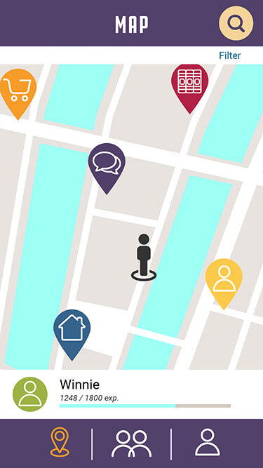
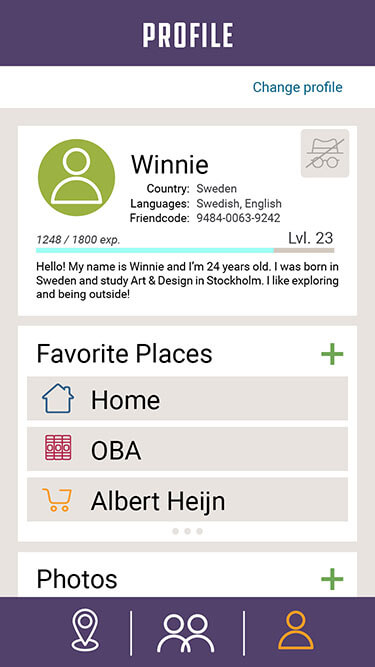
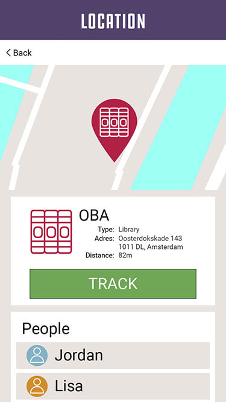
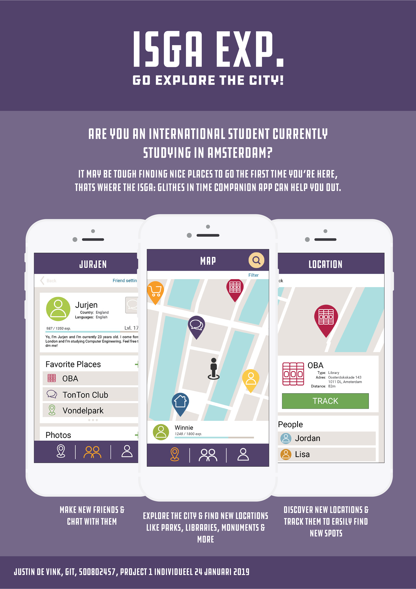

ISGA Exp.
Voor mijn eerste individuele project heb ik een prototype in de vorm van een interactieve webapp in HTML gemaakt voor internationele studenten in Amsterdam. Met het prototype konden internationale studenten in Amsterdam makkelijk de buurt verkennen en bezienswaardigheden ontdekken. Ook konden de studenten gemakkelijk een locatie in de buurt vinden waar zij konden studeren.
In Indesign heb ik een interface gemaakt op mobiel formaat, deze heb ik interactief gemaakt door de interface in delen te knippen, vervolgens heb ik in HTML links van de afbeeldingen gemaakt zodat het prototype klikbaar was. Ondestaand zijn enkele schermen uit het prototype te zien:
  Presentatieposter
Ook heb ik een poster voor de app ontworpen die studenten informeert over de app en wat studenten met de app kunnen doen.
